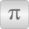

ConstantsMaterial Constants |

|
| alpha20Zero |
Value: 0 Type: LinearTemperatureCoefficient (¹/K) Description: Not temperature dependent |
|---|---|
| alpha20Aluminium |
Value: 4.000e-3 Type: LinearTemperatureCoefficient (¹/K) Description: Aluminium |
| alpha20Brass |
Value: 1.100e-3 Type: LinearTemperatureCoefficient (¹/K) Description: Brass |
| alpha20Bronze |
Value: 0.800e-3 Type: LinearTemperatureCoefficient (¹/K) Description: Bronze |
| alpha20Copper |
Value: 3.920e-3 Type: LinearTemperatureCoefficient (¹/K) Description: Copper |
This information is part of the Modelica Standard Library maintained by the Modelica Association.
Material constants, especially linear temperature coefficients of commonly used conductor materials